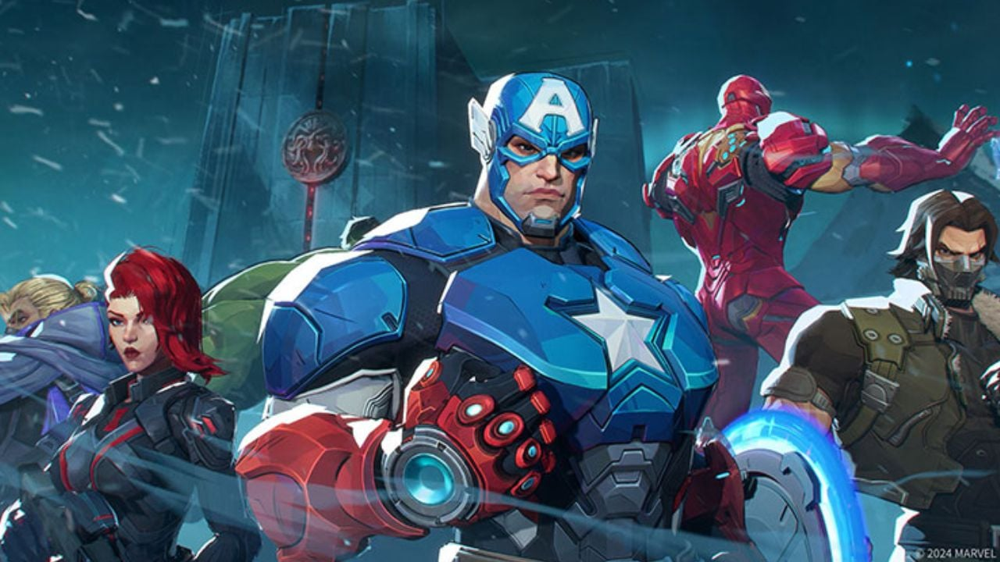

La Season 7.5 de Marvel Rivals tiene los días contados: el 15 de mayo a las 9 AM UTC arranca la Season 8 y, si los teasers de NetEase dicen algo, viene con dos incorporaciones que los fans del juego están esperando desde hace meses.
Quiénes llegan: Cyclops y el dúo Devil Dinosaur/Moon Girl
El último Gallery Card de la temporada 7.5 fue bastante directo con los hints. Dos elementos en la imagen los delatan: los anteojos rojos icónicos de Cyclops sobre un estante y un peluche de dinosaurio rojo. La comunidad no tardó ni 20 minutos en identificarlos.
Cyclops es una incorporación que los fans pedían desde la Season 1. Se espera que llegue como Duelista, con su optic blast como herramienta central de daño. No hay nada confirmado sobre su kit todavía, pero encaja perfecto con el arco mutante que NetEase viene desarrollando desde la Season 6.
Devil Dinosaur y Moon Girl serían una unidad doble, un formato que el juego todavía no probó en serio. La teoría más fuerte es que Devil Dinosaur funcione como Vanguard — tanque con músculo bruto — mientras Moon Girl lo soporte a distancia con su genio inventivo. Si funciona como se especula, sería el héroe más original del roster hasta ahora.
¿Cuándo se confirma todo?
NetEase todavía no hizo el reveal oficial de héroes ni del tema visual de la Season 8. Por el historial de temporadas anteriores, el anuncio completo llega entre 5 y 7 días antes del inicio, así que esperamos novedades entre el 8 y el 10 de mayo.
Lo que sí está confirmado es la fecha: 15 de mayo, 9 AM UTC. La Season 7.5 cierra ese mismo día, así que no hay ventana de inactividad entre temporadas.
¿Vale la pena volver si te fuiste?
Si dejaste el juego después de Blood Hunt o después del modo Loki vs. Avengers, el inicio de temporada siempre es el mejor momento para retomar. El pase de batalla se resetea, los ranks se comprimen y el meta cambia radicalmente con los nuevos héroes. Si Cyclops y el dúo son tan distintos a lo que ya existe, el balance va a ser un caos divertido por las primeras semanas.
Vamos a cubrir el reveal oficial y las notas de parche completas cuando salgan. Seguinos en Instagram @puntodespawn.ok para no perderte nada.